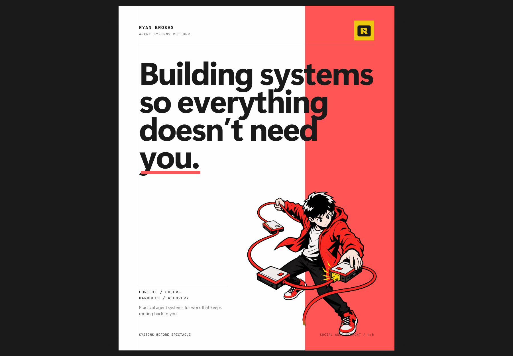

Charcoal on light
Primary production mark for near-white or pale neutral surfaces.
All four adopted production SVGs are loaded from `logos/`. Tiles use explicit grid centering so the visible R/lightning stamp remains centered on both axes.
Primary production mark for near-white or pale neutral surfaces.
High-signal stamp for protected dark plates. Keep yellow scarce.
Reversed mark for coral or controlled dark imagery.
Use on controlled surfaces where coral remains distinct from surrounding imagery.
Raster previews are preserved for environments without SVG support. Do not prefer them in production.

Primary expressive asset for website heroes, presentation covers, campaign openers, and major section introductions. Preserve the full pose, cable sweep, connected modules, and transparent margin. Use a protected light plate on charcoal.
assets/illustrations/agent-operator-hero-system-conductor-clean-print.png
Narrative support for gathering inputs before work begins. Keep the transparent margin and complete silhouette.
assets/illustrations/agent-operator-context-assembly-clean-print.png
Narrative support for failure, repair, and learning loops. Do not present illustration as operating evidence.
assets/illustrations/agent-operator-recovery-loop-clean-print.png
Narrative support for boundaries and pre-flight checks. Do not claim the illustration proves a control ran.
assets/illustrations/agent-operator-guardrail-check-clean-print.png
Narrative support for inspecting outputs and deciding what the evidence supports. Pair it with owned proof for factual claims.
assets/illustrations/agent-operator-evidence-review-clean-print.png
Narrative support for writing verified context back into a system. Do not present it as evidence that storage succeeded.
assets/illustrations/agent-operator-memory-update-clean-print.png
Narrative support for caps, limits, and safe operating boundaries. Pair it with owned cost or usage evidence.
assets/illustrations/agent-operator-budget-boundary-clean-print.png
Narrative support for time-triggered work and waiting states. It does not replace a real execution log.
assets/illustrations/agent-operator-scheduled-run-clean-print.png
Narrative support for isolating a failure and choosing the next recovery path. It does not replace an incident record.
assets/illustrations/agent-operator-failure-triage-clean-print.png
Narrative support for reviewed transfers between people or systems. Pair it with real handoff evidence when making a claim.
assets/illustrations/agent-operator-checked-handoff-clean-print.png
Narrative support for the action that changes operating state. It does not prove the work completed successfully.
assets/illustrations/agent-operator-work-execution-clean-print.png
Narrative support for choosing honestly between an agent, a script, and a process change.
assets/illustrations/agent-operator-system-choice-clean-print.pngBrand stamp and typographic name lockup only.
Never a workflow iconCovers, hero sections, campaigns, and major openers.
Never product evidenceEditorial explanation and story rhythm around systems work.
Never a control iconNavigation, disclosure, direction, recovery, and evidence requests.
Never decorative filler
The landing page combines the R/lightning identity, System Conductor hero, approved operational scenes, and labelled utility icons. Future refinements update this same surface and its capture instead of creating disconnected examples.
Open the landing page
The poster uses the approved System Conductor, protected yellow logo tile, and reusable campaign tokens for its 1080 × 1350 canvas, safe area, coral field, metadata, and title scale.
Open the social posterThe current sprite is enough for the registered component kit. Add another symbol only when a real reusable control exposes a semantic gap.
menuclosearrow-rightchevron-downcopycheckrefreshalertinfofile-plus24px viewBox, 1.75px currentColor outline, round caps and joins. Keep visible action labels by default; icon-only controls still need an accessible name and a 44px target.
Promote only when a real content need justifies the scene.
No separate production files or registered component contract are present in this package. Resume only after the semantic map and canonical source assets are confirmed.